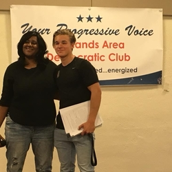
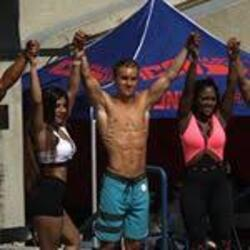
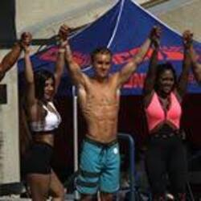

Bennett Watson
I am a first year student attending the University of California as a Pre-Business major. My hobbies include participating in the youth YMCA Circus in Redlands, competing in bodybuilding competitions, and skiing. I also dedicate my time at school to participation in my fraternity, Phi Kappa Psi, and Board Club, which is a Ski and Snowboarding club.
Some of my most notable strengths are my personability and networking capabilities. This has allowed me to branch out and make friends both socially and professionally. Additionally, I am a quick learner and adapt promptly to situations in order to accomplish a task or adjust to obstacles that may arise. These traits have helped me succeed in my working career which started my Sophomore year in High School. I interned for a software company calle Voyager Search, which is a company that uses a Smart Spacial Search which assists enterprises in creating a search engine and organizing data. Many of their clients were large organizations such as the military, or oil companies which have a surplus of data and information. My job consisted of planning and taking notes at meetings, assisting other workers, and finding potential clients through their affiliation with other businesses. More recently, I worked at the YMCA in the Kids Club department. I was responsible for caring and entertaining children while parents used the YMCA facilities. Additionally, helping out both the front desk with check in or assisting the gym employees with cleaning.
In the future, I wish to own my own business that would be involved in the fitness industry. I hope to potentially start a supplement company, apparel company or a gym. Since High school I have always wanted to create my own business that aligned with my passions in life. Since committing myself to a rigorous training program in order to compete in BodyBuilding Competitions, I have fallen in love with the industry and plan to leave an impact on it. I know that with my work ethic and dedication I can accomplish my goals. I am no stranger to failure, but I embrace its teachings and how it makes us grow as individuals in order to face adversity.
Experience
Kids Club Leader
• Watched and entertained children while parents used YMCA facility
• Helped check members into the facility
• Helped clean the gym with gym employees
Education
UC Riverside
Portfolio



